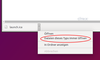

Citrix Receiver 12
Dieser Artikel wurde für die folgenden Ubuntu-Versionen getestet:
Ubuntu 14.04 Trusty Tahr
Zum Verständnis dieses Artikels sind folgende Seiten hilfreich:
Der Citrix Receiver ist ein Client zur Nutzung von Citrix-Serverdiensten. Die Software kann auf so gut wie allen gängigen Endgeräten (PC, Mac, iPhone, iPad etc.) verwendet werden, um bereitgestellte Anwendungen und ganze Desktops „on demand“ zu nutzen. Dabei spielen Art und Ort des Endgerätes keine Rolle, was den Verwaltungsaufwand in der Regel deutlich minimiert.
Die früher als Citrix ICA Client bezeichnete Software liegt in zwei Versionen vor. In diesem Artikel geht es um die ältere Version 12.x. Eine neuere Version wird im Artikel Citrix Receiver 13 beschrieben.
Installation¶
Die Installation des Citrix Receivers 12 unterscheidet sich je nachdem, ob man ein 32- oder ein 64-bit-System als Grundlage nutzen möchte. Speziell letztere sind in der Vorbereitung deutlich aufwendiger und erfordern mehrere Zwischenschritte.
32-Bit¶
Hier beschränkt sich die Installation auf das Herunterladen des Fremdpakets Receiver for Linux 
 (x86) im DEB-Format, das anschließend manuell installiert werden muss [1].
(x86) im DEB-Format, das anschließend manuell installiert werden muss [1].
Hinweis!
Fremdpakete können das System gefährden.
64-Bit¶
Multiarchitektur-Unterstützung hinzufügen¶
Zuerst muss die Multiarchitektur-Unterstützung einmalig aktiviert werden [2]:
sudo dpkg --add-architecture i386 sudo apt-get update
Abhängigkeiten installieren¶
Dann müssen die benötigten Abhängigkeiten aus den offiziellen Paketquellen installiert werden [3]:
libmotif4:i386
nspluginwrapper
lib32z1 libc6-i386
libxp6:i386
libxpm4:i386
libasound2:i386
 mit apturl
mit apturl
Paketliste zum Kopieren:
sudo apt-get install libmotif4:i386 nspluginwrapper lib32z1 libc6-i386 libxp6:i386 libxpm4:i386 libasound2:i386
sudo aptitude install libmotif4:i386 nspluginwrapper lib32z1 libc6-i386 libxp6:i386 libxpm4:i386 libasound2:i386
Fremdpaket herunterladen¶
Es wird die 64-bit-Version des Receivers für Linux benötigt. Ein DEB-Paket ist auf der offiziellen Webseite zu finden.
Hinweis!
Fremdpakete können das System gefährden.
Reparatur des Fremdpakets¶
Das offizielle Paket weist leider mehrere Fehler (u.a. bei den Abhängigkeiten) auf und muss deshalb zuerst korrigiert werden:
cd ~/Downloads mkdir ica_temp dpkg-deb -x icaclient_12.1.0_amd64.deb ica_temp dpkg-deb --control icaclient_12.1.0_amd64.deb ica_temp/DEBIAN
Jetzt öffnet man die Datei ica_temp/DEBIAN/control mit einem Editor [4]. Die Zeile, die mit Depends: ... anfängt, muss wie folgt geändert werden:
Depends: libc6-i386 (>= 2.7-1), lib32z1, nspluginwrapper, libxp6:i386, libxpm4:i386
Nun muss das Script ica_temp/DEBIAN/postinst geändert werden. Zeile 2648 muss von:
echo $Arch|grep "i[0-9]86" >/dev/null
in
echo $Arch|grep -E "i[0-9]86|x86_64" >/dev/null
geändert werden.
Nun kann ein neues Paket erstellt werden:
dpkg -b ica_temp icaclient-modified.deb
Modifiziertes Paket installieren¶
Das modifizierte Paket kann jetzt installiert werden:
sudo dpkg -i icaclient-modified.deb
Hilfsprogramme¶
Der Citrix Receiver bringt einige Hilfsprogramme mit.
Config Manager¶
Allgemeine Einstellungen wie z.B. Verbindungsverhalten, Dateizugriffe usw. können über das mitgelieferte Werkzeug wfcmgr eingestellt werden. Dieses Werkzeug verfügt über eine grafische Oberfläche, auf die hier nicht genauer eingegangen wird.
/opt/Citrix/ICAClient/wfcmgr
Die Installationsroutine hat dazu bereits einen Eintrag im Startmenü namens Citrix Receiver erstellt.
ICA-Browser¶
Ein kommandozeilenbasierter ICA-Browser. Dieser bietet eine Vielzahl an Einstellungsmöglichkeiten für das Verbinden mit ICA Servern an.
/opt/Citrix/ICAClient/util/pnabrowser
| Option | Beschreibung |
-S | verfügbare Server listen |
-A | verfügbare publizierte Applikationen listen |
-c | ICA Datei erstellen |
-d | XDG Desktop Datei angeben (nur mit -L) |
-e | Zeige Fehlernummer |
-f | Applikationsordner einbeziehen |
-i | Applikationssymbole einbeziehen (32 Pixel breit und 4 Bit pro Pixel) |
-iWxB | Applikationssymbole einbeziehen (W Pixel breit und B Bits pro Pixel) |
-k | Benutze Kerberos-Authentifizierung |
-r | Applikationssymbole als Rohdaten |
-m | zeigt verschiedene Optionen:Publisher name, Video Type, Sound Type, AppInStartMenu, AppOnDesktop, Window Type, Window Scale, Display Namenur die Werte 1 und 4-7 sind mit der Option -E (siehe unten) verfügbar |
-M | Wie -m, allerdings wird ein numerischer Wert (1-1023) für die Auswahl bestimmter Spalten genommen |
-E | zählt veröffentliche Ressourcen auf |
-L | startet eine Verbindung zu einer publizierten Anwendung |
-U | Benutzernamen angeben |
-P | Passwort angeben |
-N | neues Passwort angeben |
-D | Domäne angeben |
-Wr | wiederverbinden getrennter Applikationen |
-WR | wiederverbinden aktiver und getrennter Applikationen |
-WD | Applikationen trennen |
-WT | Applikationen beenden |
-u | Proxy-Benutzernamen angeben |
-p | Proxy-Passwort angeben |
-q | Zeige keine Fehlermeldungen |
-V | Zeige Versionsinformationen |
-h, -? | Zeige dieses Hilfefenster |
Deinstallation¶
Bei Bedarf eine Sicherung der Citrix-Einstellungen bzw. des Ordners ~/.ICAClient im Homeverzeichnis erstellen. Anschließend löschen. Im zweiten Schritt das Citrix-Paket deinstallieren:
sudo dpkg -P icaclient
Ggf. ist es noch notwendig, den Ordner /etc/icaclient manuell zu löschen:
sudo rm -rf /etc/icaclient
Problembehebung¶
SSL-Fehler¶
Da der Citrix Receiver wenig Zertifikate mit sich bringt, kann es nützlich sein, die Zertifikate von Firefox zu nutzen. Siehe Citrix ICA Client.
Firefox¶
Seit Firefox Version 30 existiert ein Problem mit dem Browser-Plugin, da der Zugriff auf die NPAPI-Schnittstelle eingeschränkt wurde und das Plugin nicht auf der Liste steht, die von Mozilla für Ausnahmen gepflegt wird. Siehe Citrix ICA Client.
Chromium/Google Chrome¶
Bei Chromium und Google Chrome kann das Problem ähnlich gelöst werden. Man erstellt einen Programmstarter /usr/share/applications/wfica.desktop mit Root-Rechten und folgendem Inhalt:
[Desktop Entry] Version=1.0 Type=Application Name=Citrix Receiver 12 Engine Icon=/opt/Citrix/ICAClient/icons/manager.png TryExec=/opt/Citrix/ICAClient/wfica Exec=/opt/Citrix/ICAClient/wfica -icaroot /opt/Citrix/ICAClient %f Categories=Application;Network;X-Red-Hat-Base;X-SuSE-Core-Internet; MimeType=application/x-ica StartupWMClass=Wfica NoDisplay=true

Nautilus muss so eingestellt werden, dass Dateien mit der Endung .ica mit dem Citrix Receiver geöffnet werden. Auch in Google Chrome müssen ICA-Dateien immer mit dem erstellten Programmstarter geöffnet werden.
Fehlende Bibliothek libXaw¶
Beim Start der Werkzeuge pnabrowser oder nslaunch auf 64-bit-Systemen erscheint die Fehlermeldung:
"error while loading shared libraries: libXaw.so.7: cannot open shared object file: No such file or directory"
Abhilfe schafft die Installation der folgenden Bibliothek:
libxaw7:i386
mit apturl
Paketliste zum Kopieren:
sudo apt-get install libxaw7:i386
sudo aptitude install libxaw7:i386
Links¶
Citrix Product Documentation
- Offizielle Citrix Receiver 12.1 DokumentationDownloadportal Citrix Receiver
- Citrix Receiver 12.1Citrix ICA Client HowTo
- diese Anleitung auf EnglischCitrix ICA Client - Hauptartikel
- Erstellt mit Inyoka
-
 2004 – 2017 ubuntuusers.de • Einige Rechte vorbehalten
2004 – 2017 ubuntuusers.de • Einige Rechte vorbehalten
Lizenz • Kontakt • Datenschutz • Impressum • Serverstatus -
Serverhousing gespendet von